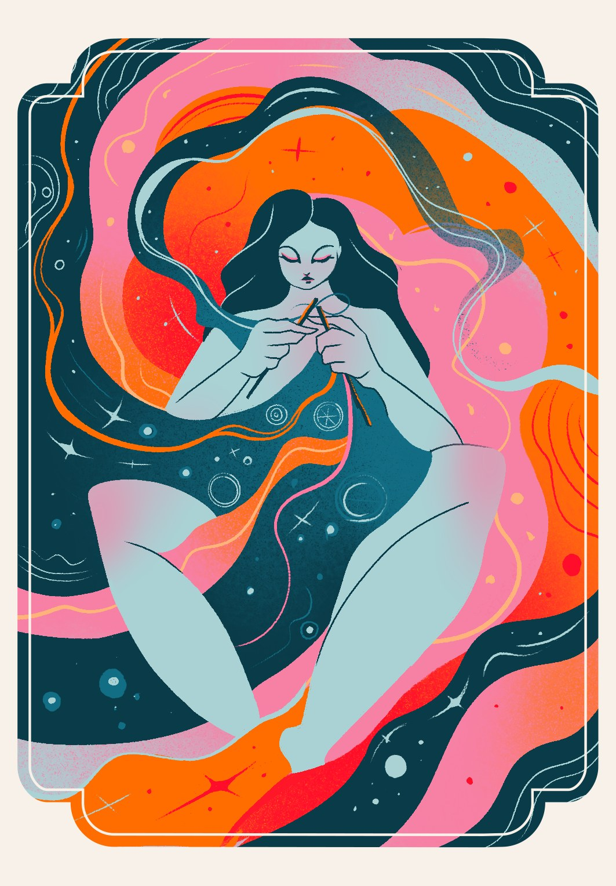

An oracle card deck created for LadySoft, guiding reflection through the phases of the menstrual cycle. Each card portrays a feminine archetype — from quiet introspection to renewal and bloom — in bold gradients and flowing line work.
View full project on Behance →
The Weaver
1 / 7